Mercedes-Benz
The Best or Nothing
Founded: 1926
Country: Germany
Icon: 300SL, S-Class
Inventor of Auto
The Best or Nothing
Mercedes-Benz is not just the world's oldest automobile manufacturer – it literally invented the car. The story begins with two men: Karl Benz and Gottlieb Daimler, working independently in 1880s Germany.
In 1886, Karl Benz patented the Benz Patent-Motorwagen, widely recognized as the world's first automobile powered by an internal combustion engine. This three-wheeled vehicle had a 0.75 horsepower engine and could reach 16 km/h. Meanwhile, Gottlieb Daimler and Wilhelm Maybach built the first four-wheeled automobile, the "Daimler Motorized Carriage," in the same year.
Daimler-Motoren-Gesellschaft (DMG) and Benz & Cie operated separately for decades. In 1901, DMG created a car named "Mercedes" after Mercedes Jellinek, the daughter of an important dealer. The Mercedes 35 HP is considered the first modern automobile – with a low center of gravity, honeycomb radiator, and lightweight engine.
The 1920s brought economic challenges that led to the merger of DMG and Benz & Cie in 1926, forming Daimler-Benz AG with the Mercedes-Benz brand. The new company's three-pointed star logo represented domination of land, sea, and air.
The 1930s brought the "Supercharged" era – massive luxury cars with compressors that forced air into the engine for extra power. The 540K is a masterpiece of the era. These cars also gained an unfortunate association with Nazi leadership.
After World War II, Mercedes-Benz rebuilt and re-established itself as a symbol of engineering excellence. The 1953 "Ponton" models introduced modern unitary construction. But the 1954 300SL "Gullwing" became the icon – a beautiful, fast, and technologically advanced sports car with distinctive upward-opening doors.
The 1960s and 1970s saw Mercedes define the modern luxury car. The "Fintail" models, the 600 "Grosser" limousine, and the 1972 S-Class (W116) established Mercedes as the benchmark. The 1979 G-Wagen (G-Class) launched and would eventually become a cultural icon.
Today, Mercedes-Benz continues to lead in technology, luxury, and innovation. The company pioneered safety features like anti-lock brakes, airbags, and electronic stability control. It leads in electrification with the EQ brand and remains the aspiration standard for automakers worldwide.
"The best or nothing."- Company motto, attributed to Gottlieb Daimler
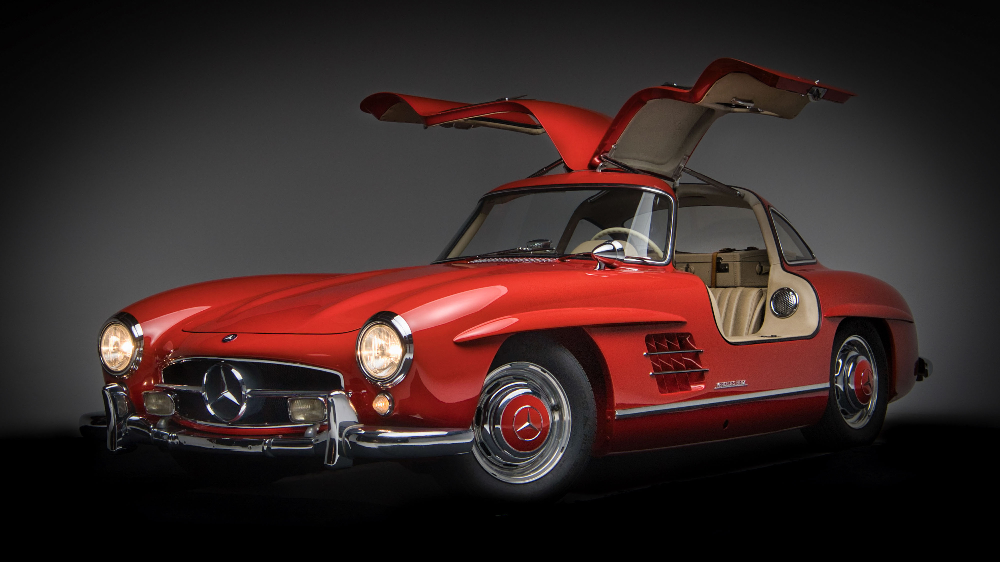
1954-1963
The "Gullwing" is one of the most beautiful and iconic cars ever built. Its distinctive upward-opening doors were necessitated by the car's tubular space frame, which made conventional doors impossible.
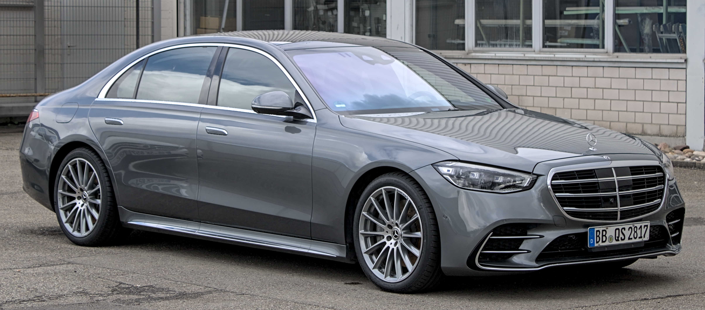
1972-present
The benchmark luxury sedan. Each generation introduces technology that eventually spreads throughout the industry.
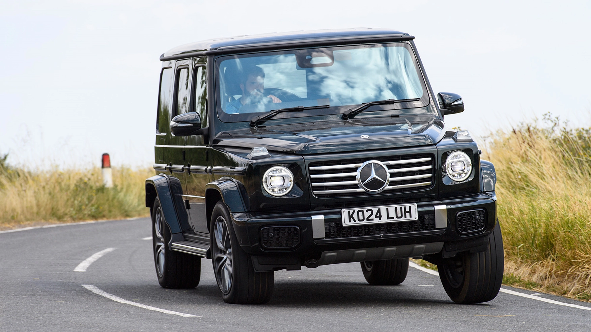
1979-present
The iconic off-roader. Originally military vehicle, now luxury status symbol. Unchanged design for 40+ years.
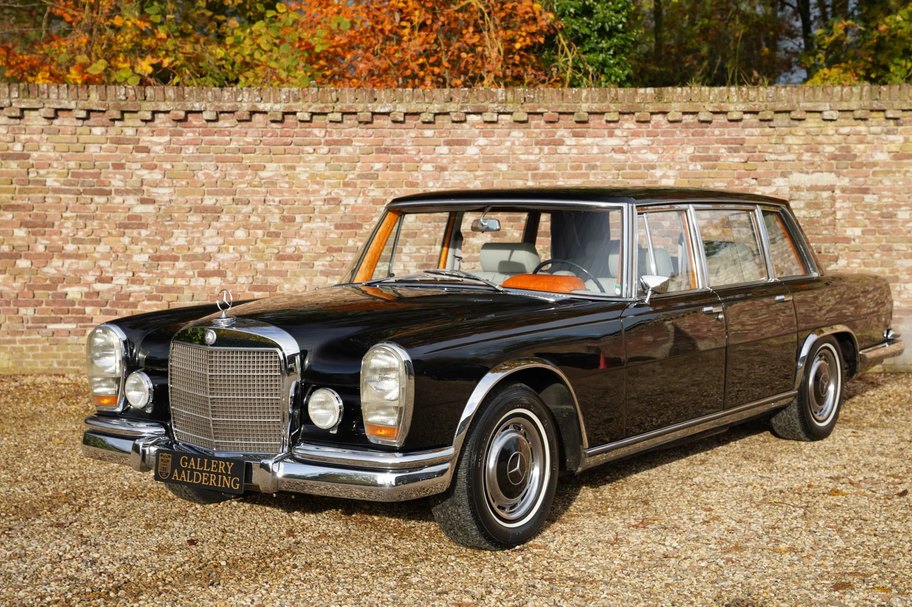
1963-1981
The ultimate luxury limousine. Owned by heads of state, popes, and celebrities. Hydraulic systems controlled everything.
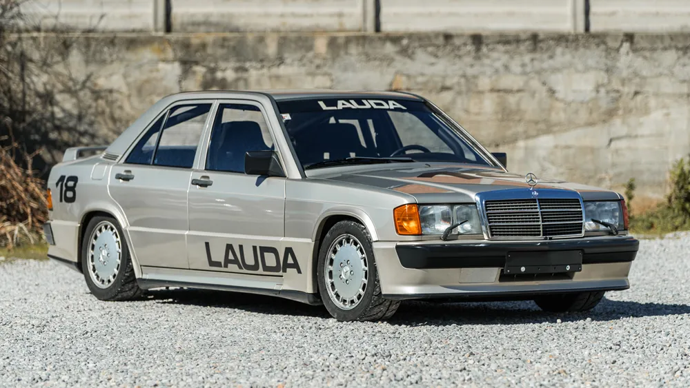
1983-1993
The homologation special developed with Cosworth. Created for DTM racing, it became a cult classic.
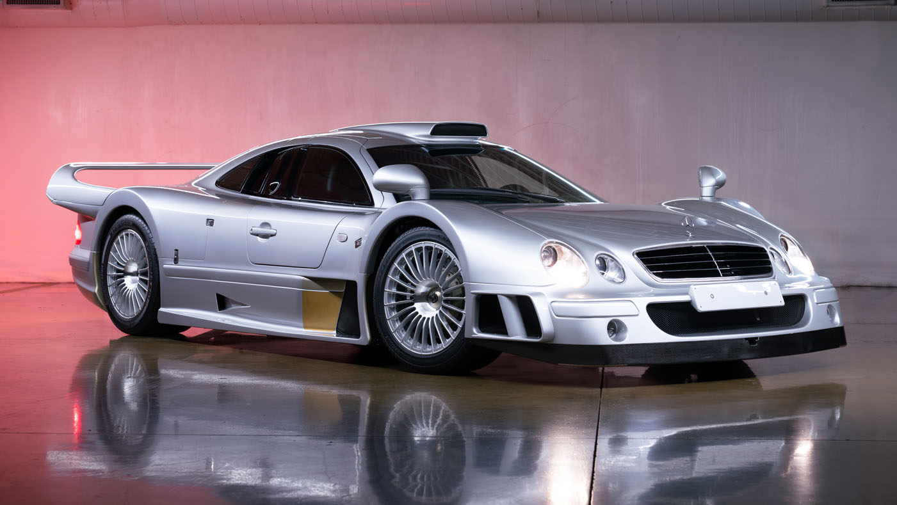
1998-1999
Homologation special for FIA GT racing. V12-powered, only 25 built. One of the rarest and most extreme Mercedes.
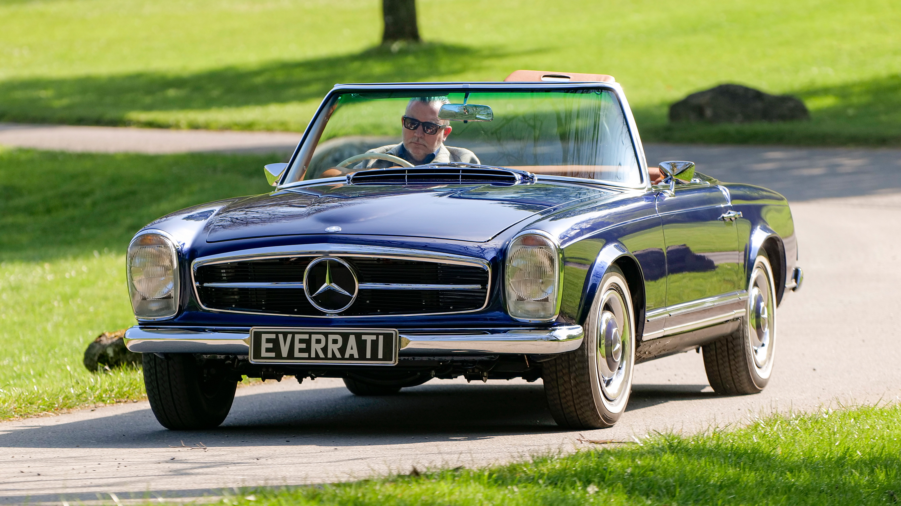
1963-1971
Beautiful roadster with distinctive concave hardtop. Graceful design and robust engineering.
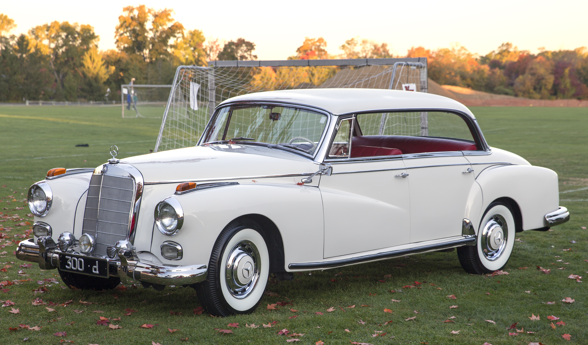
1951-1957
Post-war luxury flagship, named after German chancellor Konrad Adenauer. Hand-built and exclusive.
The S-Class has been Mercedes-Benz's flagship luxury sedan since 1972. Each generation introduces innovations that eventually spread across the entire automotive industry.
The S-Class has always been the car that defines what a luxury sedan should be. Every competitor benchmarks against it, and it remains the standard.
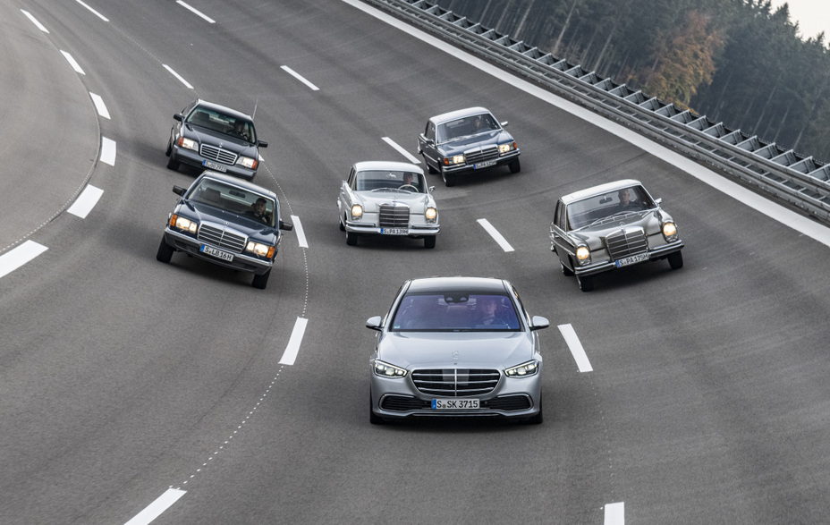
"The S-Class is not just a car. It's a statement."
The G-Class (Geländewagen) began in 1979 as a military vehicle developed with Steyr-Daimler-Puch in Austria. Designed for extreme off-road capability, it featured solid axles, locking differentials, and a ladder frame.
For decades, the G-Wagen was purely functional – used by military forces, forest rangers, and serious off-roaders. But in the 1990s, Mercedes realized it had a unique vehicle that could become a luxury status symbol.
Today's G-Class combines legendary off-road capability with handcrafted luxury. The design has barely changed in 40 years – the flat windshield, exposed door hinges, and distinctive door handles remain. Yet inside, it offers the same luxury as an S-Class.
The G-Wagen has become a cultural phenomenon, beloved by celebrities, off-road enthusiasts, and anyone who appreciates its unique combination of capability and style. The recent electric EQG version ensures it continues into the future.
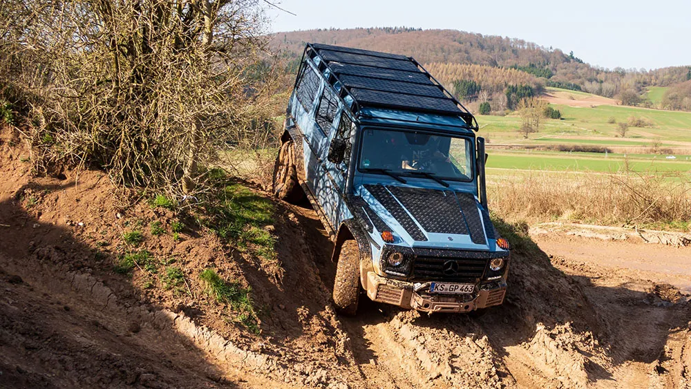
AMG began in 1967 as an independent engineering firm tuning Mercedes cars. Founded by former Mercedes engineers Hans Werner Aufrecht and Erhard Melcher, the name comes from Aufrecht, Melcher, and Großaspach (Aufrecht's birthplace).
The legend began in 1971 when an AMG-modified 300 SEL 6.8 won its class at the 24 Hours of Spa, finishing second overall against purpose-built race cars. This "Red Pig" established AMG's performance credentials.
Throughout the 1980s and 1990s, AMG built increasingly extreme Mercedes – the "Hammer" (W124 with V8) became an icon. Mercedes acquired a majority stake in AMG in 1999, making it the official in-house performance division.
Today, AMG models cover everything from the A-Class to GT sports cars, with hybrid performance and Formula 1 technology.
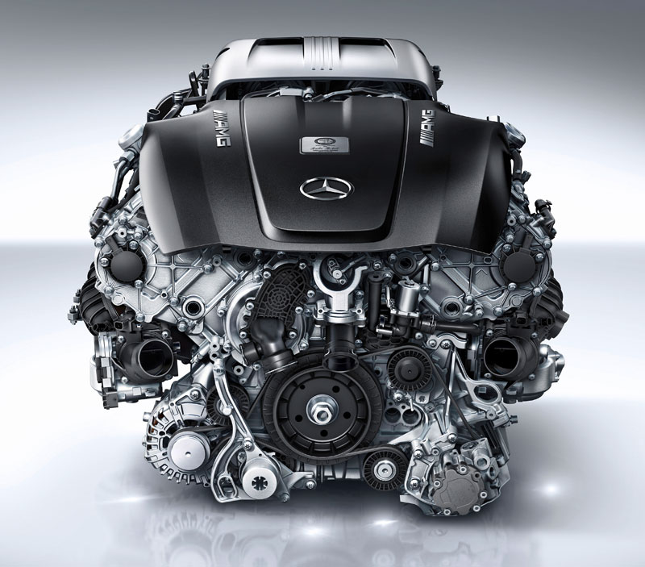
AMG engines are hand-built by one person
The 1955 Le Mans disaster – where a Mercedes 300SLR crashed into spectators, killing 84 people – led Mercedes to withdraw from racing for decades. They returned in the 1980s and never looked back.
The modern Mercedes-AMG Petronas F1 team is the most successful in history, winning 8 consecutive constructors' titles from 2014-2021 with Lewis Hamilton and Nico Rosberg.
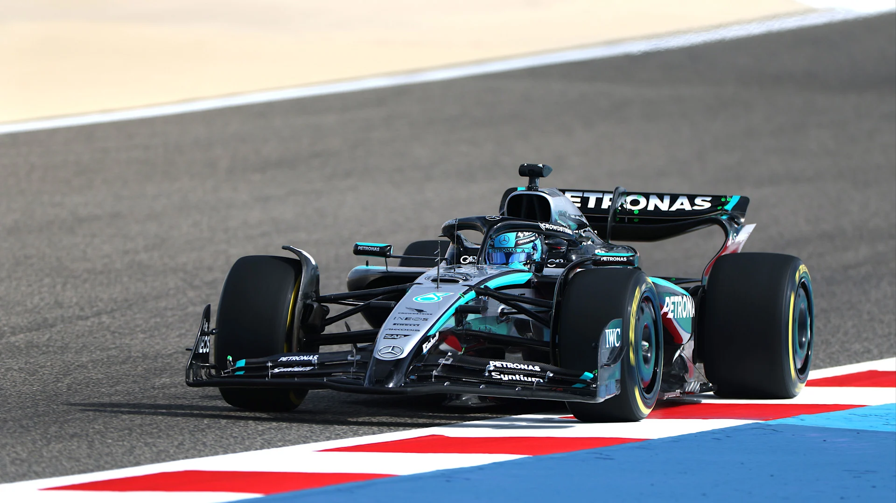